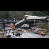

<html lang="en">
 <head>
<!-- Favicon -->
<link rel="shortcut icon" href="../../favicon.ico">
  <meta charset="utf-8"/>
  <title>
   The more we learn about Amtrak derailment the stranger it gets
  </title>
  <meta content="Post on /v/Conspiracy from 2017-12-31 by Some_Guy_from_RI." name="description"/>
  <meta content="The more we learn about Amtrak derailment the stranger it gets" property="og:title"/>
  <meta content="Post on /v/Conspiracy from 2017-12-31 by Some_Guy_from_RI." property="og:description"/>
  <link href="../../static/css/page.css" rel="stylesheet"/>
  <meta content="https://voat.conspiracy.hackliberty.org/thumbnails/8c/d1/8cd1005e-05d9-4258-b15c-93accdd458cd.jpg" property="og:image"/>
  <meta content="https://voat.conspiracy.hackliberty.org/v/conspiracy/2316228.html" property="og:url"/>
  <meta content="width=device-width, initial-scale=1" name="viewport"/>
  <link href="https://voat.conspiracy.hackliberty.org/v/conspiracy/2316228.html" rel="canonical"/>
  <meta content="article" property="og:type"/>
  <meta content="Voat /v/Conspiracy Archive" property="og:site_name"/>
  <meta content="en_US" property="og:locale"/>
  <meta content="summary_large_image" name="twitter:card"/>
  <meta content="The more we learn about Amtrak derailment the stranger it gets" name="twitter:title"/>
  <meta content="Post on /v/Conspiracy from 2017-12-31 by Some_Guy_from_RI." name="twitter:description"/>
  <meta content="https://voat.conspiracy.hackliberty.org/thumbnails/8c/d1/8cd1005e-05d9-4258-b15c-93accdd458cd.jpg" name="twitter:image"/>
 </head>
</html>
<body class="dark">
 <div id="container">
  <!-- array (
  'submissionid' => 2316228,
  'creationDate' => '2017-12-31 20:45:34',
  'domain' => 'thehill.com',
  'formattedContent' => NULL,
  'isAdult' => 0,
  'isAnonymized' => 0,
  'subverse' => 'Conspiracy',
  'thumbnail' => '8cd1005e-05d9-4258-b15c-93accdd458cd.jpg',
  'title' => 'The more we learn about Amtrak derailment the stranger it gets',
  'url' => 'http://thehill.com/opinion/technology/366833-the-more-we-learn-about-amtrak-derailment-the-stranger-it-gets',
  'userName' => 'Some_Guy_from_RI',
  'archivedLink' => NULL,
  'archivedDomain' => NULL,
  'isDeleted' => 0,
) -->
  <div style="text-align:center; font-size:24px; font-weight:bold;">
   <a href="../../index.html" style="text-decoration: none; color: inherit;">
    Voat /v/Conspiracy Archive
   </a>
  </div>
  <div class="content" role="main">
   <div class="sitetable linklisting" id="siteTable">
    <div class="submission id-2316228 link type-text" id="submission-2316228">
     <a name="submissionTop">
     </a>
     <p class="parent">
     </p>
     <a class="thumbnail may-blank" href="http://thehill.com/opinion/technology/366833-the-more-we-learn-about-amtrak-derailment-the-stranger-it-gets" target="_self">
      
     </a>
     <div class="entry unvoted">
      <p class="title">
       <a class="title may-blank" href="http://thehill.com/opinion/technology/366833-the-more-we-learn-about-amtrak-derailment-the-stranger-it-gets" tabindex="1" target="_self" title="The more we learn about Amtrak derailment the stranger it gets">
        The more we learn about Amtrak derailment the stranger it gets
       </a>
       <span class="domain">
        (
        <a href="https://archive.searchvoat.co/search.php?d=thehill.com">
         thehill.com
        </a>
        )
       </span>
      </p>
      <p class="tagline">
       submitted
       <time datetime="2017-12-31T20:45:34+00:00" title="12/31/2017 8:45:34 PM">
        2017-12-31T20:45
       </time>
       by
       <span class="userattrs">
        <a class="author may-blank" href="https://archive.searchvoat.co/search.php?u=Some_Guy_from_RI">
         Some_Guy_from_RI
        </a>
       </span>
      </p>
      <ul class="flat-list buttons">
       <li class="first">
        <a class="comments may-blank" href="https://archive.searchvoat.co/v/Conspiracy/2316228" rel="nofollow">
         1 comment
        </a>
       </li>
      </ul>
     </div>
     <div class="child">
     </div>
     <div class="clearleft">
     </div>
    </div>
    <div class="clearleft">
    </div>
   </div>
   <div class="horizontal-line">
   </div>
   <div class="commentarea">
    <div class="sitetable nestedlisting" id="siteTable">
     <div class="child id-11499726 comment even" style="">
      <div class="entry unvoted">
       <div class="noncollapsed" id="11499726" style=";">
        <p class="tagline">
         <a class="author may-blank" href="https://archive.searchvoat.co/search.php?u=derram">
          derram
         </a>
         <span class="userattrs">
         </span>
         <time datetime="2017-12-31T20:59:09+00:00" title="12/31/2017 8:59:09 PM">
          2017-12-31T20:59
         </time>
        </p>
        <div class="usertext-body may-blank-within" id="commentContent-11499726">
         <div class="md">
          <p>
           <p>
            <a href="https://archive.fo/gPCtW">
             https://archive.fo/gPCtW
            </a>
            :
           </p>
           <blockquote>
            <p>
             The more we learn about Amtrak derailment the stranger it gets | TheHill
            </p>
           </blockquote>
           <p>
            ' Quimby previously worked as a National Transportation Safety Board safety engineer for more than 20 years, investigating transit accidents to determine probable cause and proposed safety recommendations. '
           </p>
           <p>
            'But we could be waiting a while before we hear from the safety board about what led to the derailment. '
           </p>
           <p>
            'But we, the public, won’t know for sure until the National Transportation Safety Board gets a sense of urgency and tells us. '
           </p>
           <p>
            'People have an innate need to know, particularly with unexpected public transportation accidents as part of their own sense of security and trust. '
           </p>
           <p>
            'As a retired National Transportation Safety Board railroad and rapid transit accident investigator, the more I hear about the Dec. 18 derailment of Washington state Sound Transit Cascades Train 501, the stranger it gets. '
           </p>
           <hr/>
           <p>
            <a href="https://kek.gg/i/3Gh38b.png">
             This has been an automated message.
            </a>
           </p>
          </p>
         </div>
        </div>
        <ul class="flat-list buttons">
         <li class="first">
          <a class="bylink" href="https://archive.searchvoat.co/v/Conspiracy/2316228/11499726" rel="nofollow">
           link
          </a>
         </li>
        </ul>
       </div>
      </div>
     </div>
    </div>
   </div>
  </div>
 </div>
<!-- Footer Section -->
<footer class="container-fluid mt-3">
  <p class="small mb-0">
    /v/conspiracy archive has 42504 posts and 159856 total comments.
    <a href="https://git.hackliberty.org/c0mmando/voat-conspiracy-archive/">source code</a>.
  </p>
</footer>

<script src="../../static/js/jquery-3.7.1.slim.min.js"></script>
<script src="../../static/js/comments-toggle.js"></script>

</body>
